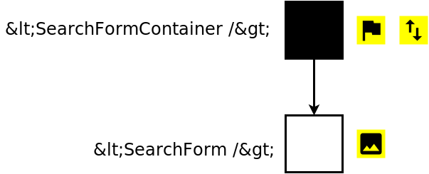

Front-end Empire State Building
React
A JavaScript library for building user interfaces.
Deklaratywność

Virtual DOM

Komponent


(props, state) => element- Komponent powinien mieć jedno źródło prawdy.
- Stan komponentu powinien być
minimalną reprezentacją potencjalnych zmian.
<SearchForm />


<SearchForm />
<Input />
<SuggestionsList />
<Suggestion />


Redux
Predictable state container for JavaScript apps.
1. Jedno źródło prawdy
Stan aplikacji jest jednym obiektem
Store
2. Stan jest read-only
Modyfikacja stanu następuje asynchronicznie
Akcja
3. Zmiana stanu jest czystą funkcją
Modyfikację stanu opisuje funkcja